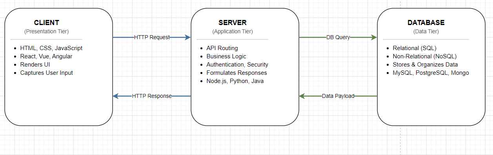

Full Stack
The whole picture, end to end — how the browser and server have a conversation.
The Concept
What does "full stack" actually mean?
Front End — what you see
HTML builds the structure, CSS makes it look right, and JavaScript adds interactivity. The front end runs in your browser — no server needed for the rendering step.
The front end's job is to present information clearly and let users interact with it without confusion.
Back End — what does the work
The server receives requests, applies business logic (check the user's permission, query the database, format the data), and sends back a response — usually JSON.
The back end never sees the page directly. It only sees the request and decides what to return.
Database — the memory
The database is where all application data is stored and managed securely. It keeps information such as user details, passwords, and records.
The backend connects to the database to retrieve or update data when needed. In simple terms, it acts as the memory of the web application.
How they connect
A user action in the browser triggers a request (HTTP). The server processes it, queries the database if needed, and returns data. The browser updates the page. This cycle powers every modern web app.
Architecture Diagram
The three-layer request cycle visualised:

Live Demo
Request cycle simulator
Click the button to simulate a full-stack request. Watch each layer respond in order.
Live — runs in your browser
Reflection
The hardest part of learning full stack isn't any single technology — it's understanding how the layers talk. The demo above helped me see that every button click has a whole journey behind it. What worked: the diagram made the data flow obvious. What I'd improve next: add a real API call so the simulation uses live data.